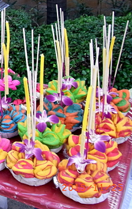
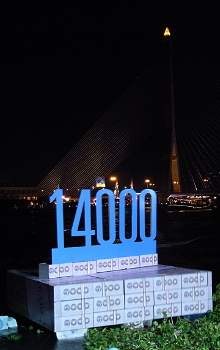
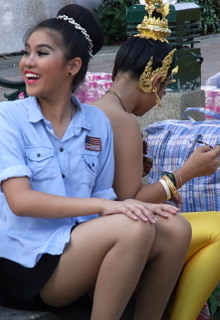

Above photos show several tables of krathong for sale, krathong making, a performance, and reminders this is a family event.
Krathong made mostly of woven banana leaf with a small flower and candle or sparkler were nowhere to be found. Two broad categories are now popular: Heavy slabs of banana tree trunk surrounded with plain or colored strips of banana leaf, adorned with a flower arrangement, several sticks of incense, and a candle; Or, bread baked into various shapes and adorned as above. Prices range from 40 bhat (about $1.15) up.
Photos to the side show decorated river boats, lanterns, cone krathong. Note dancers in background eating lunch behind lion dance costume. The last photo on the right side shows traditional dance head-gear.
The little photos below show bread dough krathong, a float which helped block the wind from blowing out the candles as krathong were lowered into the river (did not ascertain the significance of 14000), and performers in the tedious task of applying make up, hours before appearing on stage.



Do you wish you were here?
Babu Bill
------------------------------
Questions? Email me at the juno.com address dancer2SEAsia.
"The world is a book and those who do not travel read only one page."
...attributed to Saint Augustine of Hippo